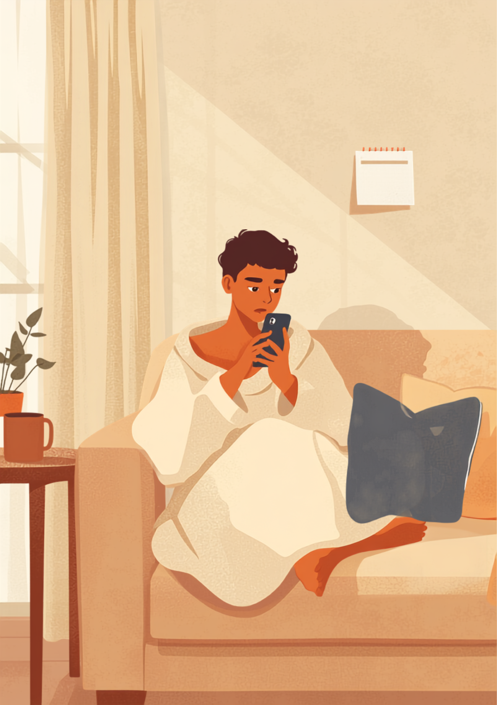

休職中は毎日が休みのはずなのに、カレンダー上の「休日」がくると、なぜか妙に落ち着かなくなる。そんな感覚を抱く方は少なくないようです。この記事では、休職中に休日になると「ちゃんと休まなきゃ」と思ってしまう方の心理と、罪悪感との付き合い方を当事者の声をもとに整理しました（2026年9月時点の情報です）。
PR



本当は休んでいい日のはずなのに、なぜか落ち着かない
休職中なのに「休日はちゃんと休まなきゃ」と思ってしまう違和感

休職中は、平日も休日も同じように「仕事をしていない日」が続きます。それでもカレンダー上の「休日」がくると、急に「ちゃんと休まなきゃ」という新しい課題が生まれてしまうことがあるようです。まめざる
就労支援の現場で関わってきた中で、休職中の方から繰り返し聞いてきた言葉があります。「平日は仕事をしていないから休んでいる感覚があるのに、土日になると急に、ちゃんと休まなきゃって思ってしまうんです」というものです。休職中の休日は、本来ならなおさら気を張らずに過ごせるはずの日ですが、実際には「休日らしく過ごせているか」という新しい物差しが増えてしまい、かえって落ち着かなくなるという声をよく聞きます。
この現象の背景には、頑張ることに慣れている方ほど、休むことにも「ちゃんとやらなければ」という姿勢を向けてしまう傾向があるようです。仕事のときは成果を出そうとし、休職中は回復しようとし、休日になれば今度は「ちゃんと休もう」とする。結果として、どの時間帯にも気を抜けない状態が続いてしまうことがあります。
!
休日の過ごし方に対する感じ方には個人差があります。この記事で挙げる内容がそのまま当てはまるとは限らないため、生活リズムや気分の落ち込みが強く続く場合は自己判断せず主治医に相談することをお勧めします。
「うつ病で休職して3ヶ月くらい経った頃です。平日は特に何も思わないのに、日曜の朝だけ癖でアラームが鳴って、目が覚めた瞬間に『今日は休みなのに、なんで身構えてるんだろう』って自分でびっくりしました。正直言うと、休日って言葉を聞くだけで、なぜか気が抜けなくなってたんです。今思えば、毎日が休みだったのに、休日だけ余計なプレッシャーを自分でかけてた気がします。」
30代・女性（うつ病・事務職）
「適応障害で休んでいたとき、土曜の夜に見たかったアニメを一気見してたんですけど、途中で『あれ、これ休職中なのにやっていいことなのか』って手が止まったんです。めちゃくちゃ変な話なんですけど、平日にやったら罪悪感あるのに、休日にやってもなぜか同じくらい落ち着かなくて。結局最後まで見れずに寝ました。」
20代・男性（適応障害・システムエンジニア職）
「パニック障害で半年休みました。休みの日は掃除や洗濯を全部やらないと気が済まなくて、気づいたら一日中動き回ってました。友人に『休みの日くらい休みなよ』って言われて、初めて自分がずっと何かをしていないと不安だったことに気づきました。休むって、思っていたよりずっと難しいことなんだなと思います。」
40代・女性（パニック障害・経理職）
「サボっている」ように感じてしまう心理
休職中の休日に落ち着かなくなる背景には、「何もしていない自分」への漠然とした不安があるとされています。平日であれば「休職中だから仕方ない」と自分を納得させやすい一方、休日は本来誰もが休む日であるため、「休んでいる理由」を自分の中で見失いやすくなるのかもしれません。
i
頑張り屋な方や責任感の強い方ほど、何もしない時間に罪悪感を覚えやすい傾向があるという指摘もあります。感じ方には個人差があり、それ自体は珍しいことではないようです。
このように、休むこと自体に許可がいらないという視点を持てるかどうかが、休日の過ごしやすさに関わってくるようです。何かをしなければ一日を無駄にしたことになる、という考え方を少し脇に置いてみると、休日の重さが変わることがあるかもしれません。
休みの日を、もう少し楽に過ごすための考え方
「休日」を特別扱いしすぎないという考え方
休職中は、平日と休日を無理に区別しようとしなくてもよいとされています。区別をつけることで生活リズムが整いやすくなる場合がある一方、「休日はこうあるべき」という新しいルールを自分に課してしまうと、かえって疲れてしまうこともあるようです。
相談の一コマ
相談者
土日になると「充実した休日を過ごさなきゃ」って気持ちになって、逆にソワソワしちゃうんです。平日は何もしなくても平気なのに。
まめざる
「充実した休日」というイメージが、いつの間にか新しい目標になってしまっているのかもしれませんね。休職中の休日に、達成すべきことは何もありませんよ。
相談者
言われてみれば、休日だけ変に気合を入れてました。何もしない日があってもいいんですね。
まめざる
はい。「今日は何もしなかった」で終わる日があっても、それは休職中の休日としてごく普通のことだと思いますよ。
「休日らしく過ごせたか」で一日を採点しようとすると、休むこと自体が新しい仕事になってしまいます。採点をやめてみるだけでも、少し楽になる方がいるようです。まめざる
気持ちが少し軽くなるかもしれない考え方をいくつか挙げてみます。
- 「休日だから」という理由づけをせず、平日と同じ感覚で過ごしてみる
- 予定を詰め込まず、その日の気分で動く時間を残しておく
- 「今日は何もしなかった」を、失敗ではなく記録として淡々と書き留めてみる
- 罪悪感が強い日は、その気持ちごと誰かに話してみる
罪悪感が消えないときに、一人で抱えないための相談先
休日への罪悪感が強く、眠れない・食欲がないといった状態が続く場合は、気分の落ち込みが背景にある可能性もあるとされています。一人で対処しようとせず、早めに周囲へ伝えることが勧められています。
一人で抱えないための相談先
- 主治医（生活リズムや気分の波の相談）
- 職場に選任されている産業医（50人以上の事業場に選任義務あり）
- 就労移行支援事業所・地域障害者職業センター（生活リズムを整える支援）
- 家族や友人など、安心して話せる身近な人
休日の過ごし方や罪悪感の感じ方には個人差があります。この記事の内容がそのまま当てはまるとは限らないため、気分の落ち込みが強く続く場合は主治医とよく相談しながら過ごし方を考えることをお勧めします（2026年9月時点の情報です）。
休職中の休日に、達成すべき目標はありません。「今日は何もしなかった」で終わる日があっても、それは失敗ではなく、休職中のごく普通の一日です。
よくある質問
Q. 休職中なのに休日になると余計に落ち着かなくなるのは、なぜですか？
休職中は毎日が休みのはずなのに、「休日」という枠がやってくると「ちゃんと休まなければ」という新しい課題に感じてしまうことがあるとされています。頑張って何かを達成しようとする癖が、休むことにまで向いてしまうケースのひとつのようです。
Q. 休職中に「ちゃんと休む」とは、具体的にどういうことですか？
決まった正解はないとされていますが、何かを達成しようとせず、体調や気分に任せて過ごす時間を指すことが多いようです。「今日は一日中ゴロゴロして終わった」という日があっても、それ自体が悪いことではないと捉える見方もあります。
Q. 休日に何もしないことに罪悪感を感じるのは、甘えなのでしょうか？
甘えとは限らないとされています。責任感が強い方や、普段から頑張ることに慣れている方ほど、何もしない時間に罪悪感を覚えやすい傾向があるという指摘もあります。感じ方に個人差はありますが、それ自体を責める必要はないようです。
Q. 休職中の生活で、平日と休日の区別はつけたほうがいいのでしょうか？
区別をつけることで生活リズムが整いやすくなる場合がある一方、区別を意識しすぎるとかえって「休日はこうあるべき」という新たなプレッシャーになることもあるとされています。無理に区別を作ろうとせず、体調に合わせて緩やかに整えていく考え方もあります。
Q. 罪悪感が強くて眠れない・食欲がないときは、どうすればいいですか？
罪悪感の強さが睡眠や食事に影響している場合は、一人で抱え込まず主治医に伝えることが勧められています。休職中の過ごし方について不安が続く場合も、次の診察や産業医面談で率直に相談してみることをお勧めします（2026年9月時点の情報です）。
本来もっとも休んでいい日のはずが、罪悪感はむしろ大きくなりやすい
PR


一人で抱え込む前に、今の気持ちを話してみませんか
「まだ迷っている」段階でも大丈夫です。mimemimeの無料相談は、今の状況の整理から一緒に始められます。
無料で話してみる
この記事に、聞いてみたいことはありますか？
「自分の場合はどうなんだろう」と思ったことを、気軽に書いてみてください。いただいた質問は個別にお返事したうえで、匿名で記事にすることがあります。
おのざる
mimemime代表。就労支援の現場経験をもとに、障がいのある方の働く不安に寄り添う記事を執筆。